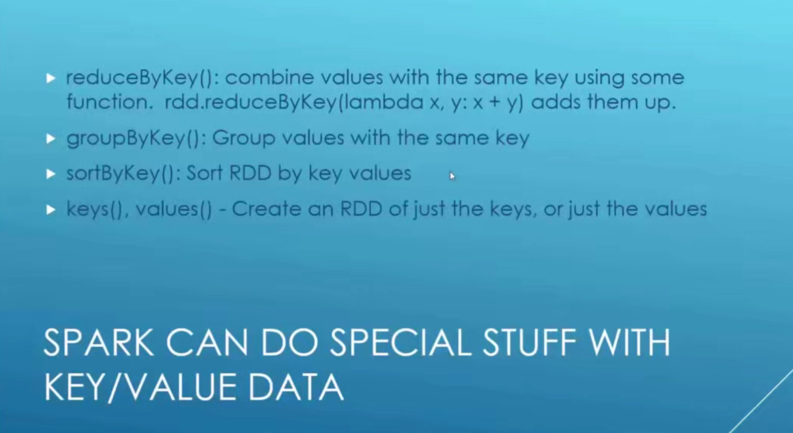

2. Spark Basics and the RDD Interface
1. What’s new in Spark 3
2. Introduction to Spark
3. The Resilient Distributed Dataset (RDD)
4. Ratings Histogram Walkthrough
# 交给spark运行
spark-submit ratings-counter.py
from pyspark import SparkConf, SparkContext, SQLContext
import collections
# org.apache.spark.SparkException: Python worker failed to connect back.
import os
os.environ['PYSPARK_PYTHON'] = "python" # 放Python的位置
conf = SparkConf().setMaster('local').setAppName('RatingsHistogram')
sc = SparkContext(conf=conf) # spark 上下文
# lines = sc.textFile('file:///SparkCourse/ml-100k/u.data')
lines = sc.textFile('../dataset/fakefriends.csv')
# 截取每行的第4列
ratings = lines.map(lambda x: x.split(',')[2])
# 计算所有行中, 不同数据出现的次数
result = ratings.countByValue()
# 将结果排序
sortedResults = collections.OrderedDict(sorted(result.items()))
for k, v in sortedResults.items():
print("%s %i" % (k, v))
5. KeyValue RDD’s, and the Average Friends by Age Example

6. [Activity] Running the Average Friends by Age Example
from pyspark import SparkConf, SparkContext
import os
os.environ['PYSPARK_PYTHON'] = "python" # 放Python的位置
conf = SparkConf().setMaster('local').setAppName('FriendsByAge')
sc = SparkContext(conf=conf) # spark 上下文
def parseLine(line):
fields = line.split(',')
age = int(fields[2])
numFriends = int(fields[3])
return (age, numFriends)
lines = sc.textFile('../dataset/fakefriends.csv')
# csv的每一行执行parseLine
rdd = lines.map(parseLine)
# (k,x) -> (k,(x,1)) -> (k, (x+y, x1+y1)) ; x+y=total age, x1+y1=how many
# reduceByKey: 对key相同的数据进行操作
totalsByAge = rdd.mapValues(lambda x: (x, 1)) \
.reduceByKey(lambda x, y: (x[0] + y[0], x[1] + y[1]))
averagesByAge = totalsByAge.mapValues(lambda x: x[0] / x[1])
results = averagesByAge.collect()
for res in results:
print(res)
7. Filtering RDD’s, and the Minimum Temperature by Location Example
8. [Activity]Running the Minimum Temperature Example, and Modifying it for Maximums
from pyspark import SparkConf, SparkContext
import os
os.environ['PYSPARK_PYTHON'] = "python" # 放Python的位置
conf = SparkConf().setMaster('local').setAppName('min-temp')
sc = SparkContext(conf=conf) # spark 上下文
def parseLine(line):
fields = line.split(',')
stationID = fields[0]
entryType = fields[2]
# 转华氏温度
temperature = float(fields[3]) * 0.1 * (9.0 / 5.0) + 32.0
return (stationID, entryType, temperature)
lines = sc.textFile('../dataset/1800.csv')
# csv的每一行执行parseLine
rdd = lines.map(parseLine)
# x[1] 是一个字符串标记, 这里找出最低温度标记
minTemps = rdd.filter(lambda x: "TMIN" in x[1])
# 去掉其他列
stationTemps = minTemps.map(lambda x: (x[0], x[2]))
# 相同key(station)之间取y(temp)值小的
minTemps = stationTemps.reduceByKey(lambda x, y: min(x, y))
results = minTemps.collect()
for res in results:
print(res[0] + "\t{:.2f}F".format(res[1]))
9. [Activity] Running the Maximum Temperature by Location Example
from pyspark import SparkConf, SparkContext
import os
os.environ['PYSPARK_PYTHON'] = "python" # 放Python的位置
conf = SparkConf().setMaster('local').setAppName('max-temp')
sc = SparkContext(conf=conf) # spark 上下文
def parseLine(line):
fields = line.split(',')
stationID = fields[0]
entryType = fields[2]
# 转华氏温度
temperature = float(fields[3]) * 0.1 * (9.0 / 5.0) + 32.0
return (stationID, entryType, temperature)
lines = sc.textFile('../dataset/1800.csv')
# csv的每一行执行parseLine
rdd = lines.map(parseLine)
# x[1] 是一个字符串标记, 这里找出最低温度标记
minTemps = rdd.filter(lambda x: "TMAX" in x[1])
# 去掉其他列
stationTemps = minTemps.map(lambda x: (x[0], x[2]))
# 相同key(station)之间取y(temp)值小的
minTemps = stationTemps.reduceByKey(lambda x, y: max(x, y))
results = minTemps.collect()
for res in results:
print(res[0] + "\t{:.2f}F".format(res[1]))
10. [Activity] Counting Word Occurrences using flatmap()
from pyspark import SparkConf, SparkContext
import os
os.environ['PYSPARK_PYTHON'] = "python" # 放Python的位置
conf = SparkConf().setMaster('local').setAppName('WordCount')
sc = SparkContext(conf=conf) # spark 上下文
input = sc.textFile('../dataset/Book.txt')
# 扁平化, 案例：对给定单词列表 ["Hello","World"],你想返回列表["H","e","l","o","W","r","d"]
# 用空格分割句子, 然后展开为一个一个单词
words = input.flatMap(lambda x: x.split())
# (x) -> (x,count)
wordCounts = words.countByValue()
for word, count in wordCounts.items():
cleanWord = word.encode('ascii', 'ignore')
if (cleanWord):
print(cleanWord, count)
11. [Activity] Improving the Word Count Script with Regular Expressions
from pyspark import SparkConf, SparkContext
import re
import os
os.environ['PYSPARK_PYTHON'] = "python" # 放Python的位置
# 只提取单词, 不保留标点符号等
def normalizeWords(text):
return re.compile(r'\W+', re.UNICODE).split(text.lower())
conf = SparkConf().setMaster('local').setAppName('WordCountBetter')
sc = SparkContext(conf=conf) # spark 上下文
input = sc.textFile('../dataset/Book.txt')
# 扁平化, 案例：对给定单词列表 ["Hello","World"],你想返回列表["H","e","l","o","W","r","d"]
# 用空格分割句子, 然后展开为一个一个单词
words = input.flatMap(normalizeWords)
# (x) -> (x,count)
wordCounts = words.countByValue()
for word, count in wordCounts.items():
cleanWord = word.encode('ascii', 'ignore')
if (cleanWord):
print(cleanWord, count)
12. [Activity] Sorting the Word Count Results
from pyspark import SparkConf, SparkContext
import re
import os
os.environ['PYSPARK_PYTHON'] = "python" # 放Python的位置
# 只提取单词, 不保留标点符号等
def normalizeWords(text):
return re.compile(r'\W+', re.UNICODE).split(text.lower())
conf = SparkConf().setMaster('local').setAppName('WordCountBetter')
sc = SparkContext(conf=conf) # spark 上下文
input = sc.textFile('../dataset/Book.txt')
# 扁平化, 案例：对给定单词列表 ["Hello","World"],你想返回列表["H","e","l","o","W","r","d"]
# 用空格分割句子, 然后展开为一个一个单词
words = input.flatMap(normalizeWords)
# (x) -> (x,1) => (x,1),(x,1) -> (x,2) ...
wordCounts = words.map(lambda x: (x, 1)).reduceByKey(lambda x, y: x + y)
# (word, count) -> (count, word) -> sort by count
# wordCountsSorted = wordCounts.map(lambda (x,y): (y,x)).sortByKey() # Python 3 中不支持元组形参解包
wordCountsSorted = wordCounts.map(lambda x: (x[1], x[0])).sortByKey()
results = wordCountsSorted.collect()
for res in results:
count = str(res[0])
word = res[1].encode('ascii', 'ignore')
if (word):
print(word, ':\t\t', count)
13. [Exercise] Find the Total Amount Spent by Customer
14. [Excercise] Check your Results, and Now Sort them by Total Amount Spent.
from pyspark import SparkConf, SparkContext
import os
os.environ['PYSPARK_PYTHON'] = "python" # 放Python的位置
conf = SparkConf().setMaster('local').setAppName('Customer')
sc = SparkContext(conf=conf) # spark 上下文
def extractCustomerPricePairs(line):
fields = line.split(',')
return (int(fields[0]), float(fields[2]))
input = sc.textFile('../dataset/customer-orders.csv')
mappedInput = input.map(extractCustomerPricePairs)
totalByCustomer = mappedInput.reduceByKey(lambda x, y: x + y)
results = totalByCustomer.collect()
for res in results:
print(res)
15. Check Your Sorted Implementation and Results Against Mine.
from pyspark import SparkConf, SparkContext
import os
os.environ['PYSPARK_PYTHON'] = "python" # 放Python的位置
conf = SparkConf().setMaster('local').setAppName('Customer')
sc = SparkContext(conf=conf) # spark 上下文
def extractCustomerPricePairs(line):
fields = line.split(',')
return (int(fields[0]), float(fields[2]))
input = sc.textFile('../dataset/customer-orders.csv')
mappedInput = input.map(extractCustomerPricePairs)
totalByCustomer = mappedInput.reduceByKey(lambda x, y: x + y)
flipped = totalByCustomer.map(lambda x: (x[1], x[0]))
totalByCustomerSorted = flipped.sortByKey()
results = totalByCustomerSorted.collect()
for res in results:
print(res)
3. SparkSQL, DataFrames, and DataSets
1. Introducing SparkSQL
2. [Activity] Executing SQL commands and SQL-style functions on a DataFrame
from pyspark.sql import SparkSession, Row
# org.apache.spark.SparkException: Python worker failed to connect back.
import os
os.environ['PYSPARK_PYTHON'] = "python" # 放Python的位置
# create session
spark = SparkSession.builder.appName('SparkSQL').getOrCreate()
def mapper(line):
fields = line.split(',')
return Row(ID=int(fields[0]), name=str(fields[1].encode('utf-8')),
age=int(fields[2]), numFriends=int(fields[3]))
lines = spark.sparkContext.textFile('../dataset/fakefriends.csv')
people = lines.map(mapper)
# Infer the schema,and register the DataFrame as a table.
schemaPeople = spark.createDataFrame(people).cache()
schemaPeople.createOrReplaceTempView('people') # 创建临时视图
# SOL can be run over DataFrames that have been registered as a table.
teenagers = spark.sql('SELECT * FROM people WHERE age >= 13 AND age <= 19')
# The results of SQL queries are RDDs and support all the normal RDD operations.
for teen in teenagers.collect():
print(teen)
# We can also use functions instead of SQL queries:
schemaPeople.groupBy('age').count().orderBy('age').show()
spark.stop()
3. Using DataFrames instead of RDD’s
from pyspark.sql import SparkSession, Row
# org.apache.spark.SparkException: Python worker failed to connect back.
import os
os.environ['PYSPARK_PYTHON'] = "python" # 放Python的位置
# create session
spark = SparkSession.builder.appName('SparkSQL').getOrCreate()
people = spark.read.option('header', 'true') \
.option('inferSchema', 'true') \
.csv('../dataset/fakefriends-header.csv')
print("Here is our inferred schema:")
people.printSchema()
print("Let's display the name column:")
people.select("name").show()
print("Filter out anyone over 21:")
people.filter(people.age < 21).show()
print("Group by age")
people.groupBy("age").count().show()
print("Make everyone 10 years older:")
people.select(people.name, people.age + 10).show()
spark.stop()
4. [Exercise] Friends by Age, with DataFrames
5. Exercise Solution Friends by Age, with DataFrames
from pyspark.sql import SparkSession, Row, functions as func
# org.apache.spark.SparkException: Python worker failed to connect back.
import os
os.environ['PYSPARK_PYTHON'] = "python" # 放Python的位置
spark = SparkSession.builder.appName('FriendsByAge').getOrCreate()
lines = spark.read.option('header', 'true') \
.option('inferSchema', 'true') \
.csv('../dataset/fakefriends-header.csv')
# Select only age and numFriends columns
friendsByAge = lines.select('age', 'friends')
# From friendsByAge we group by "age" and then compute average
friendsByAge.groupby('age').avg('friends').show()
# Sorted
friendsByAge.groupby('age').avg('friends').sort('age').show()
# Formatted more nicely
# agg() 聚合多种操作
friendsByAge.groupby('age').agg(func.round(func.avg('friends'), 2)).sort('age').show()
# With a custom column name
(friendsByAge.groupby('age').agg(func.round(func.avg('friends'), 2).alias('friends_avg'))
.sort('age').show())
spark.stop()